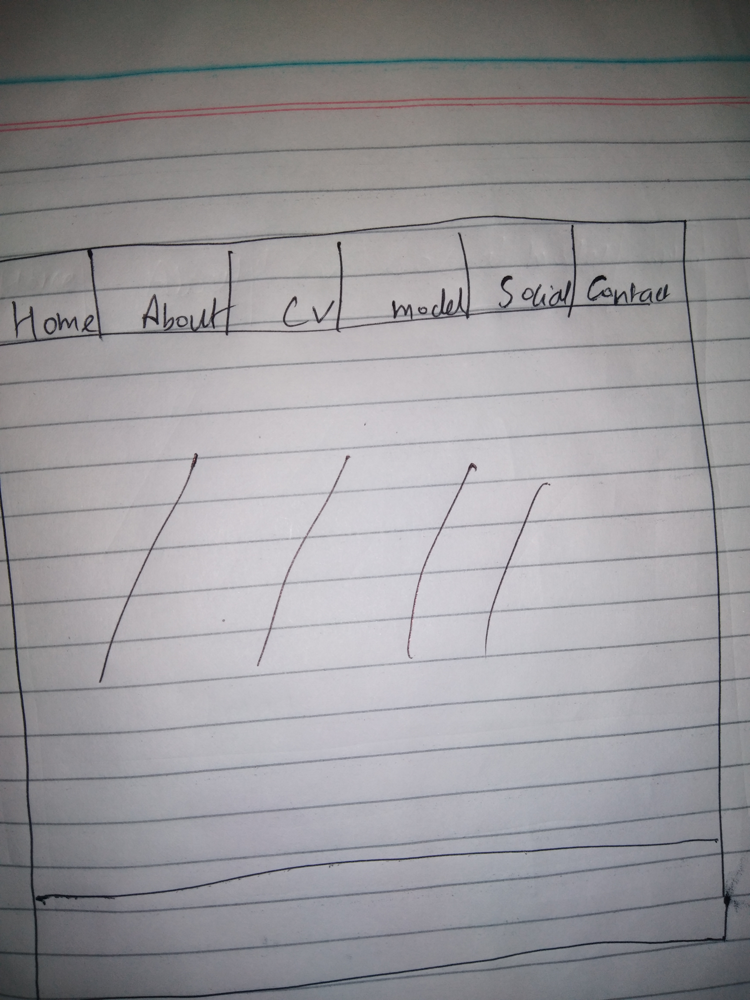
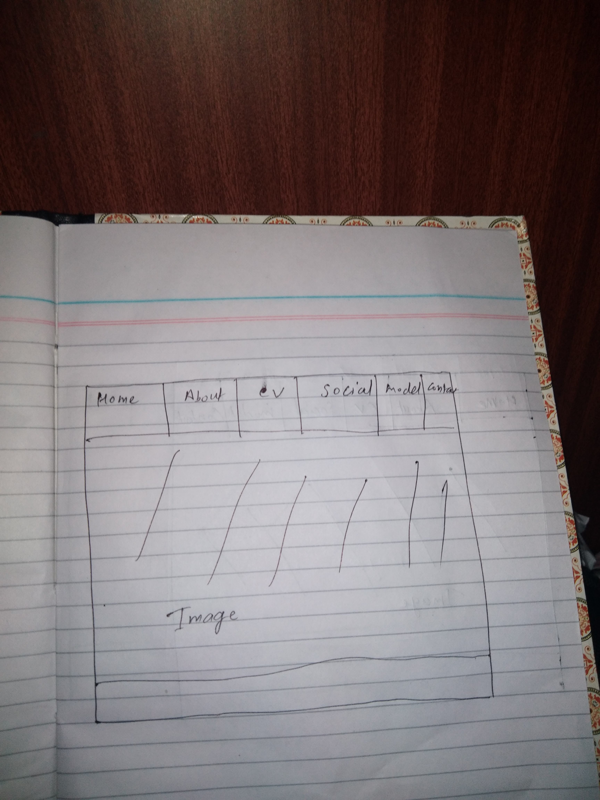

Introduction
This is the assignment of web where we must make our own websites using html and CSS. There are six pages in the websites which are connected with one another i.e. home, contact, model, CV and social. Different fonts are used while making the website. In homepage navigation bar are kept whereas in about information about the web developer are provided. In CV my qualification and bio data are mentioned. In social page different social sites are connected so the user can directly access to the social sites and whereas in contact page user can connect with me by registration as well as in model report is done. The main aim of this website is to display personal information of myself. Different color, attractive fonts are made. This is simple website which only gives information about my personal behaviors.
Design: While making the website rough sketches are made which helped me making of war frame. They are shown below:
*Homepage:

This is the home page or the main page of website. There is six navigation bars home, about, CV, social, contact, show. Distinctive text styles and styles are utilized while making this landing page. I had likewise utilized activity in the photo to make it more attractive. Picture is kept amidst the landing page. By clicking in route bar you will have the capacity to get more data about the sites.
*About:
This is the about page of website. In this page you will get the information about the site page build and furthermore his introduction. Different content style and abstract size are used as a piece of this page. Information about the destinations are kept in this greeting page. Generally this page is made with a particular true objective to give every datum concerning the destinations, how it is made and about the website.
*CV:

This is the CV page of locales. This page gives information about my information and qualification. Distinctive text style and scholarly styles are used as a part of this page. As this is the individual destinations, CV is much fundamental to show the information and qualification of the individual locales. As footer is moreover used as a piece of this page. Every individual information are kept in CV thusly, that the watchers get every information and qualifications of the web developer.
*SOCIAL:

This is the social page of my website. Where different social sites are provided so that user can easily get more information about me. Social sites like Facebook, Instagram, twitter, YouTube link has been provided. Social sites pic are connected to its own social media so, user can get more personal information about me.
*CONTACT:
Whereas this is the contact page where user can register or login to my personal website. This page consists of username, password, register, login as well as signup in order to axis information about me. In contact page my location is also given so that user can know my place.
*CONCLUSION
While making the website different color combination whereas beautiful fonts has been used to make it look more attractive. While making the websites I had faced obstacles on html and CSS. After having obstacles I got various information and ideas about web developing what most should be used and what most not in order to look attractive. In the coming days I won’t faced problems regarding the development of websites and I feel proud to say that without any obstacles I am able to make my own cool website again using html and CSS.
This is a personal website
Design
My website is done by using html and css.This is the simple website containing six navigation bar. Design is basically understood as the outline of the webpage. Basically we had done home, about, contact, cv, social and model and also this is the main part of the website. we had also provided rough figure so that it will make easy to viewer what i had done in the particular website.
Validation
This are the validation of my personal websites HTML.Validation for website: After the website is completed, the website must be validate to check the errors and missing items. It is also one of the most important part of website after developing any website for organization or personal purpose validation must be done. It shows all our errors of html and css which helps developer to know easily what the mistake had been happened while making the websites.
Home validation
Social validration

Contact validration
About validration

CV validration

HOMEPAGE:

ABOUT:
Contact:
CV:

SOCIAL:
Reference
Following are the some of sites from where I have taken helps for my Website as a reference.
https://www.w3schools.com/
https://www.w3.org/